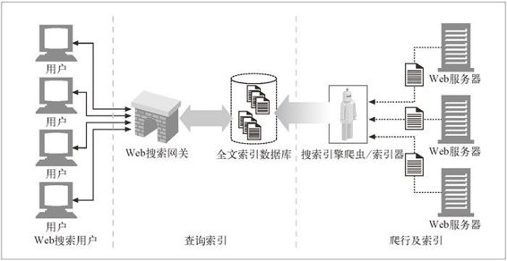
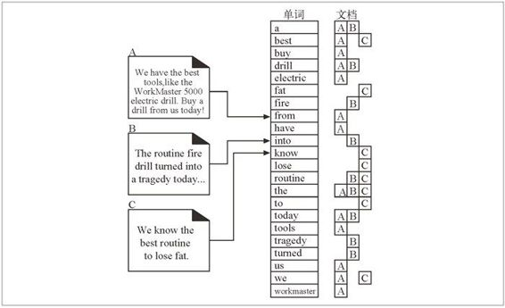
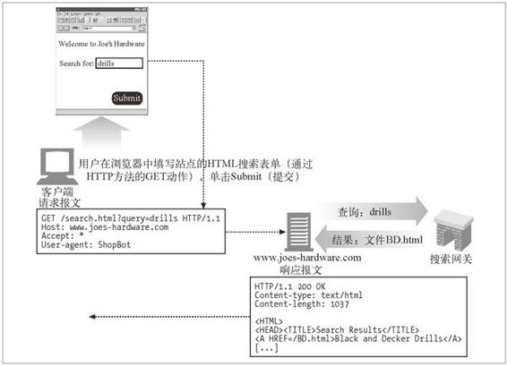

9.6 搜索引擎
得到最广泛使用的 Web 机器人都是因特网搜索引擎。因特网搜索引擎可以帮助用户找到世界范围内涉及任意主题的文档。
现在 Web 上很多最流行的站点都是搜索引擎。很多 Web 用户将其作为起始点，它们会为用户提供宝贵的服务，帮助用户找到他们感兴趣的信息。
Web 爬虫为因特网搜索引擎提供信息，它们获取 Web 上的文档，并允许搜索引擎创建与本书后面的索引类似的索引，用以说明哪些文档中有哪些词存在。搜索引擎是 Web 机器人的主要来源——让我们来快速了解一下它们是如何工作的。
9.6.1 大格局
Web 发展的初期，搜索引擎就是一些相当简单的数据库，可以帮助用户在 Web 上定位文档。现在，Web 上有数十亿可供访问的页面，搜索引擎已经成为因特网用户查找信息不可缺少的工具。它们在不断地发展，以应对 Web 庞大的规模，因此，现在已经变得相当复杂了。
面对数十亿的 Web 页面，和数百万要查找信息的用户，搜索引擎要用复杂的爬虫来获取这数十亿 Web 页面，还要使用复杂的查询引擎来处理数百万用户产生的查询负荷。
我们来考虑一下产品级 Web 爬虫的任务，它要获取搜索索引所需的页面，它要发出数十亿条 HTTP 请求。如果每条请求都要花半秒钟的时间（对有些服务器来说可能慢了，对另一些服务器来说可能快了 1），（对十亿份文件来说）就要花费：
1 这取决于服务器的资源、客户端的机器人，以及两者之间的网络状况。
0.5 秒 ×（100 0000 000）/（60 秒 / 天）×（60 分 / 小时）×（24 小时 / 天）
如果请求是连续发出的，结果差不多是 5700 天！很显然，大型爬虫得更聪明一些，要对请求进行并行处理，并使用大量机器来完成这项任务。但由于其规模庞大，爬行整个 Web 仍然是件十分艰巨的任务。
9.6.2 现代搜索引擎结构
现在的搜索引擎都构建了一些名为“全文索引”的复杂本地数据库，装载了全世界的 Web 页面，以及这些页面所包含的内容。这些索引就像 Web 上所有文档的卡片目录一样。
搜索引擎爬虫会搜集 Web 页面，把它们带回家，并将其添加到全文索引中去。同时，搜索引擎用户会通过 HotBot（http://www.hotbot.com）或 Google（http://www.google.com）这样的 Web 搜索网关对全文索引进行查询。Web 页面总是在不断地发生变化，而且爬行一大块 Web 要花费很长的时间，所以全文索引充其量也就是 Web 的一个快照。
现代搜索引擎的高层结构如图 9-7 所示。
9.6.3 全文索引
全文索引就是一个数据库，给它一个单词，它可以立即提供包含那个单词的所有文档。创建了索引之后，就不需要对文档自身进行扫描了。

图 9-7 产品级搜索引擎中包含了一些协作的爬虫和查询网关
图 9-8 显示了三份文档和相应的全文索引。全文索引列出了包含每个单词的文档。

图 9-8 三份文档和一个全文索引
比如：
单词“a”位于文档 A 和 B 中；
单词“best”位于文档 A 和 C 中；
单词“drill”位于文档 A 和 B 中；
单词“routine”位于文档 B 和 C 中；
单词“the”位于所有的三份文档 A、B 和 C 中。
9.6.4 发布查询请求
用户向 Web 搜索引擎网关发布一条请求时，会填写一个 HTML 表单，他的浏览器会用一个 HTTP GET 或 POST 请求将这个表单发送给网关。网关程序对搜索请求进行解析，并将 Web UI 查询转换成搜索全文索引所需的表达式。2
2 传送这条请求的方法与所使用的搜索策略有关。
图 9-9 显示了一条对 www.joes-hardware.com 站点的简单用户查询。用户在搜索框表单中输入 drills，然后浏览器就会将这个动作转换成一条在 URL 中包含请求参数的 GET 请求。3 Joe 的五金商店的 Web 服务器收到这条请求，并将其转发给其搜索网关应用程序，这个程序会将文档的结果列表返回给 Web 服务器，然后 Web 服务器又会将这些结果转换成 HTML 页面提供给用户。
3 2.2.6 节讨论了 URL 中查询参数的常见用法。

图 9-9 搜索查询请求的实例
9.6.5 对结果进行排序，并提供查询结果
一旦搜索引擎通过其索引得到了查询结果，网关应用程序会获取结果，并将其拼成结果页面提供给终端用户。
很多 Web 页面都可能包含任意指定的单词，所以搜索引擎采用了一些很聪明的算法，尝试着对结果进行排名。比如，在图 9-8 中，单词 best 出现在很多文档中；为了将相关度最高的结果提供给用户，搜索引擎要知道应该按照什么顺序来提供结果列表中的文档。这被称为相关性排名（relevancy ranking）——这是对一系列搜索结果的评分和排序处理。
为了更好地辅助这一进程，在爬行 Web 的过程中都会进行数据统计。比如，对指向指定页面的链接进行计数有助于判断其流行程度，还可以用此信息来衡量提供结果的顺序。算法、爬行中获取的辅助信息以及搜索引擎所使用的其他技巧都是保守最森严的秘密。
9.6.6 欺诈
在搜索请求得到的前几个结果中没有看到自己想要查找的内容时，用户通常会感到很沮丧，因此，查找站点时搜索结果的顺序是很重要的。在搜索网管们认为能够最好地描述其站点功能的单词时，会有众多因素激励着这些网管，努力使其站点排在靠近结果顶端的位置上，尤其是那些依赖于用户找到它们，并使用其服务的商业站点。
这种对较好排列位置的期待引发了很多对搜索系统的博弈，也在搜索引擎的实现者和那些想方设法要将其站点列在突出位置的人之间引发了持久的拉锯战。很多网管都列出了无数关键字（有些是毫不相关的），使用一些假冒页面，或者采用欺诈（spoof）行为——甚至会用网关应用程序来生成一些在某些特定单词上可以更好地欺骗搜索引擎相关性算法的假冒页面。
这么做的结果就是，搜索引擎和机器人实现者们要不断地修改相关性算法，以便更 有效地抓住这些欺诈者。